Sujeong's Portfolio
Sujeong's Portfolio
Sujeong's Portfolio
Sujeong's Portfolio

2021. 08. 10 ~ 2021. 09. 03(25일간) / 3명
Spring,AJAX, MyBatis,JAVA, JSP, jQuery, ORACLE, HTML, CSS, Javascript, Bootstrap
Eclipse, SQL developer,Visual Studio Code, eXERD,SourceTree,GitHub
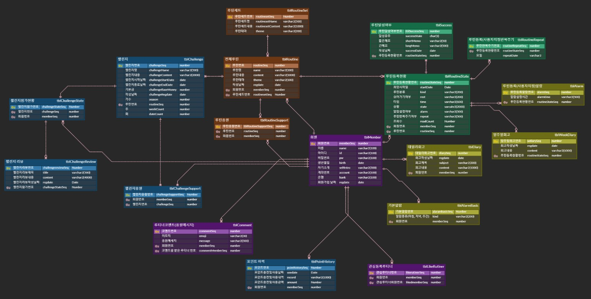
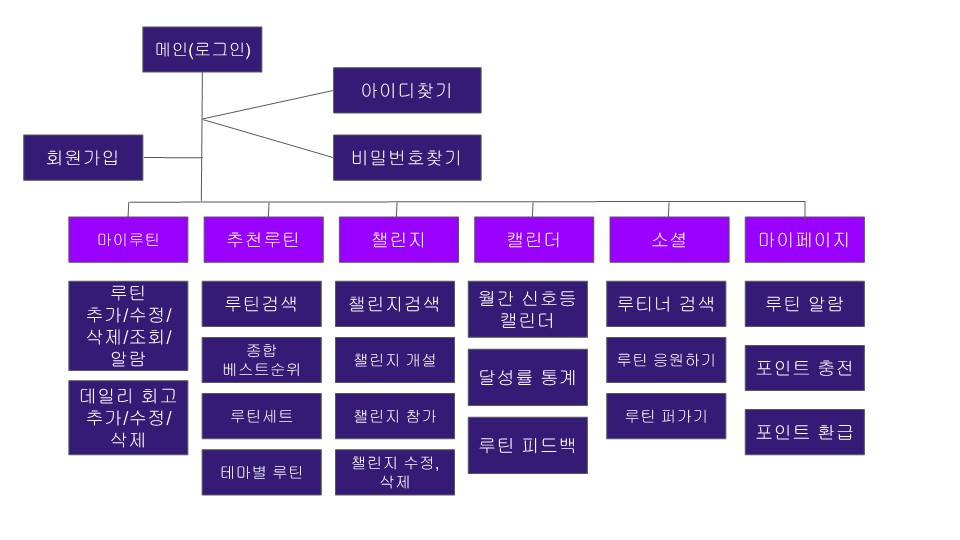
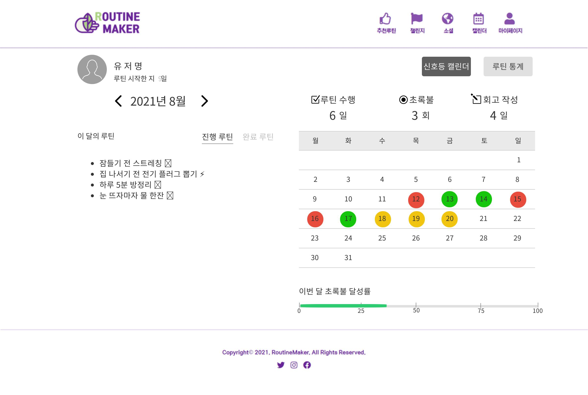
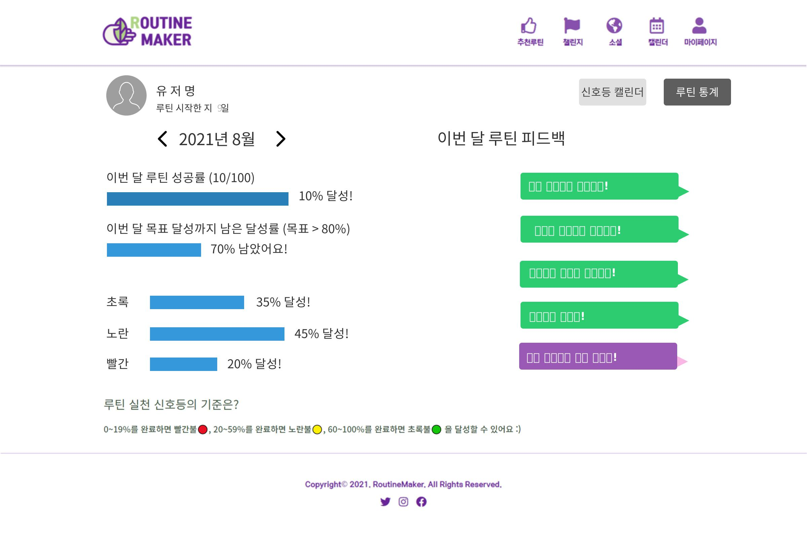
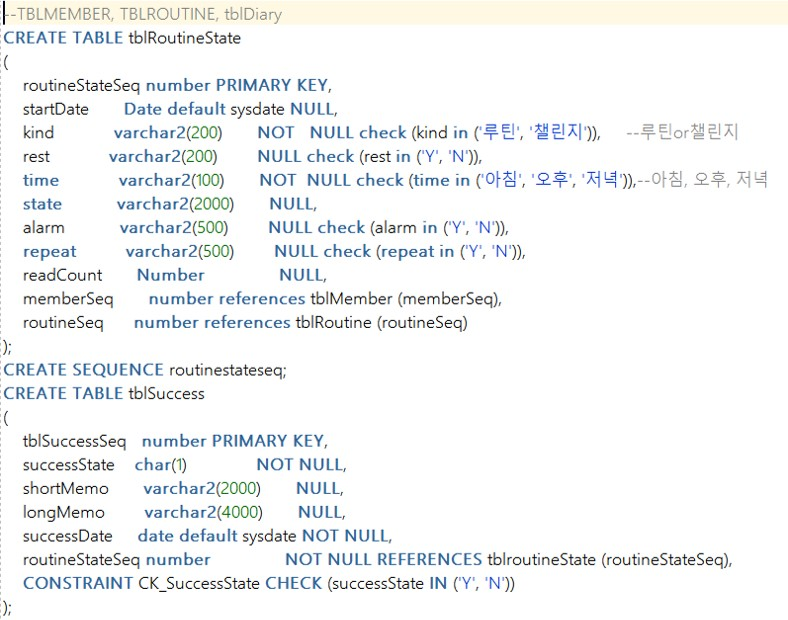
사용자의 루틴등록현황/ 달성유무/ 루틴반복일자 등 사용자가 등록한 루틴에 대한 상세내역과 그에 따른 달성 유무에 대해서 더미를 생성하였고, 통계를 담당업무로 하다보니 Query로 계산해야 할 값들이 많았다. 월별 성공 달성율과 현재일을 기준으로 지난루틴과 진행루틴을 나눠 출력하고 현재일까지 성공한 달성율을 계산하여 출력하였다.
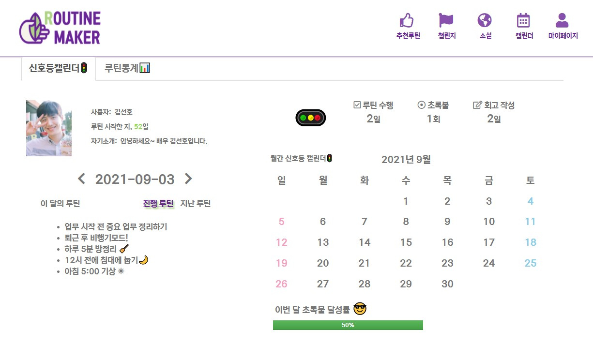
사용자의 정보를 왼쪽 상단에 출력하고 라디오버튼과 목록태그를 이용하여 지난루틴과 진행루틴을 구별해서 출력할 수 있도록 구현했다. 오른쪽 상단에는 이모지와 테이블태그를 이용하여 달력을 현재일 기준 달력을 출력하였고 하단에는 부트스트랩을 이용하여 막대그래프를 구현하였다.
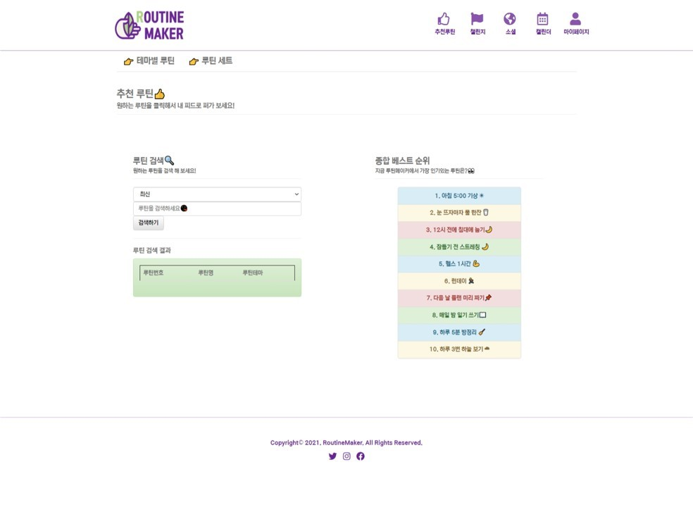
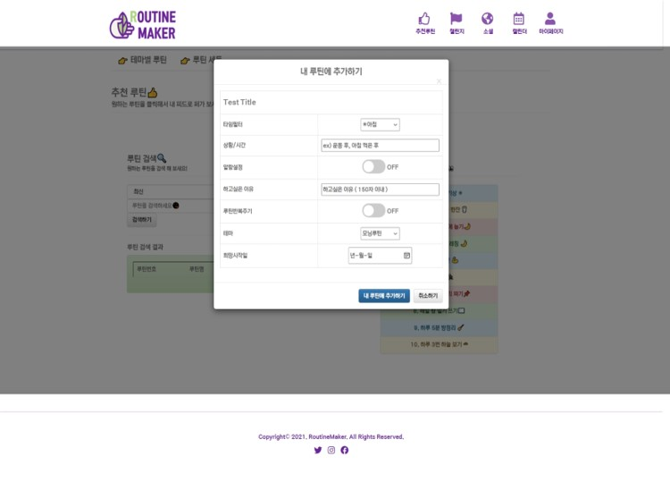
루틴추천의 종합베스트 순위를 출력할 때 테이블의 td태그별로 리스트가 출력되고 부트스트랩으로 구현한 리스트의 색상이 반복해서 바뀌게
출력하기 위해 el로 반복문을 사용하여 구현하였고, 검색기능을 구현하기 위해 단어로 검색된 루틴들을 json형태로 배열에 저장한 후 Ajax를 사용하여 검색된 루틴들을
출력할 수 있도록 구현하였다. 출력된 리스트가 최신순, 등록순 등 순서를 선택하여 나열될 수 있도록 구현하였다.
모달 기술을 사용하여 종합베스트루틴에 있는 루틴을 선택하면 내 루틴으로 퍼갈 수 있는 루틴추가 창이 뜨도록 구현하였다.
기존의 스케줄 웹 사이트를 분석하여 벤치마킹하고 우리만의 '차별점'을 구상하였다.
사용자가 로그인, 아이디/비밀번호 찾기, 회원가입을 할 수 있고 마이루틴, 추천루틴, 챌린지, 캘린더, 소셜, 마이페이지 를 사용할 수 있다.
마이루틴에서는 루틴에
대한 상세 기능을 사용할 수 있고 데일리 회고를 작성 및 수정/삭제가 가능하다.
추천 루틴은 어떤 루틴이 있는지 검색할 수 있고 총 루틴의 종합 베스트 순위, 비슷한
루틴끼리 모여 테마별로 추천이 되는 루틴세트 기능을 사용할 수 있다.
같은 루틴을 달성하고 싶은 사용자끼리 모여 챌린지를 개설할 수 있고 참여하여 달성에 따른 포인트
적립과 차감이 가능하다.
사용자가 작성했던 루틴의 테마와 총 등록된 루틴의 갯수 대비 달성율을 계산하여 캘린더와 신호등으로 시각적으로 확인이 가능하다.
사용자끼리 서로의 루틴을 구경할 수 있고 다 루티너를 검색할 수 있다. 다른 루티너의 루틴을 스크랩해서 내 루틴으로 추가 가능하고 다른 루티너의 루틴에 응원하기 기능이
있다.
마이페이지에서는 루틴별 알람설정이 가능하고 챌린지 참여에 필요한 포인트를 충전할 수 있고 현금으로 환급할 수 있다.
사용자가 등록하고 달성한 루틴을 월별로 통계내어 달성률을 시각화하고 현재일을 기준으로 이번달에 달성해야하는 루틴과 지난 과거의 루틴을 버튼별로 보이게 화면 구성을 카카오오븐을 사용하여 대략적인 UI를 설계하였다.
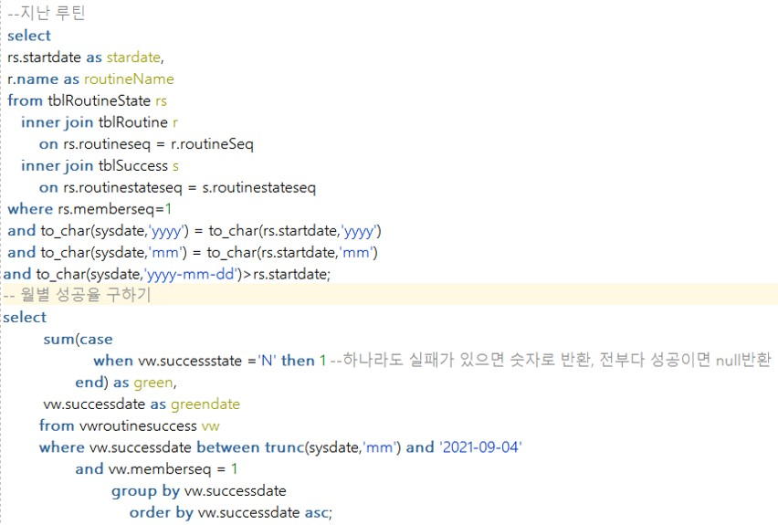
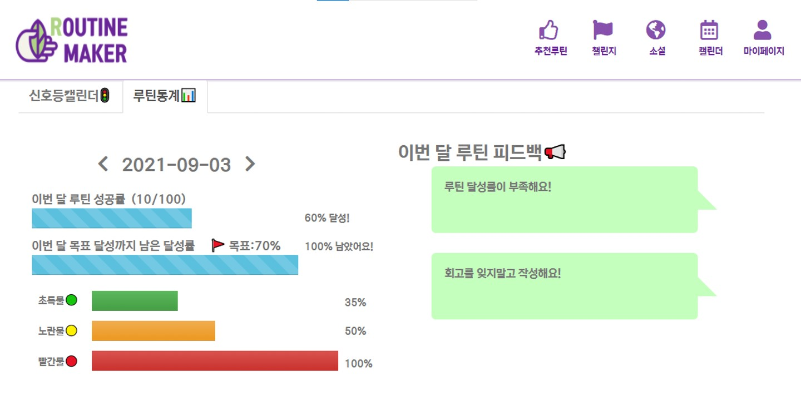
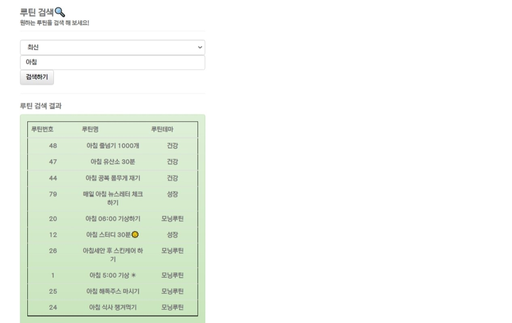